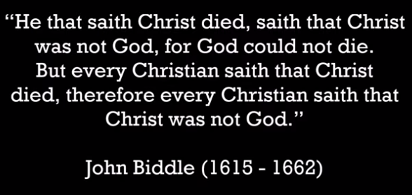
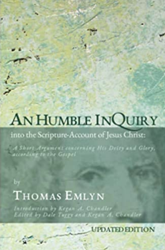
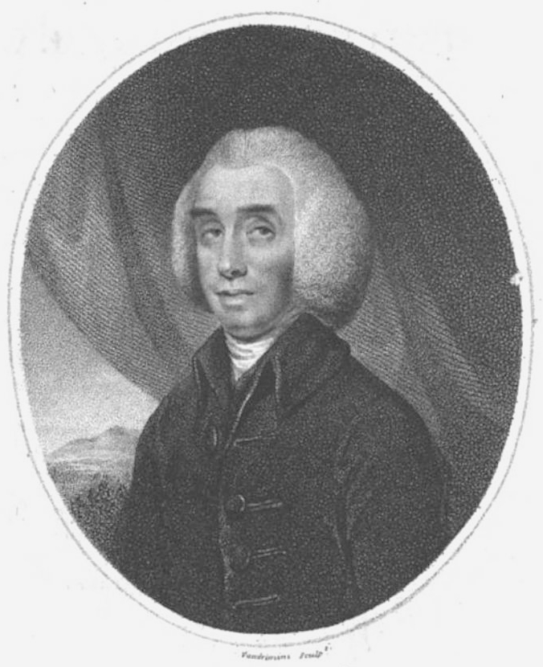
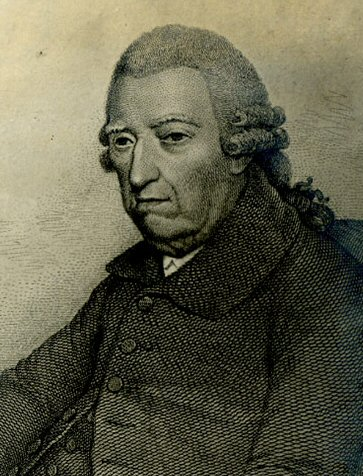

-
John Biddle
John Biddle (1615-1662), was a distinguished British academic, graduate of Oxford, and at the age of 26 elected headmaster of Crypt Grammar School in Gloucester, England. As he was tasked with teaching Scripture, he thoroughly studied the Bible and adopted a Unitarian view of God, despite no exposure to Unitarian publications. This belief led to six imprisonments due to his teachings and writings against the concept of the Trinity. Parliament eventually made denial of the doctrine of the Trinity a capital offence in 1648. Biddle, however, escaped the death sentence because in 1655 Lord Protector Oliver Cromwell banished him to the Scilly Isles. Released in 1658, he presided over a small group of disciples who met regularly in London. Subsequently, he was sent to prison in Newgate in 1662 and died there in September that year, aged 47.
Biddle became known as the 'Father of English Unitarianism.' Here is a sample of his teaching :-
John 17:3. "This is eternal life, that they know thee (Father) the only true God, and Jesus Christ whom thou hast sent." Observe here in the first place, that our Saviour Christ, setting down those persons, in whom eternal life consists, makes no mention of the Holy Spirit; whereas, if he were [the one] God, the knowledge of him would be as necessary for the attainment of eternal life as that of the Father. Secondly, he so describeth the Father, as that he makes him the only true God, thereby manifestly excluding any other person whatsoever from being the true God. -
Thomas Emlyn
Thomas Emlyn (1663-1741) was a beloved minister in a Presbyterian church in Dublin, Ireland. After investigating some recent controversies about "the Trinity," Emlyn found himself seeing the New Testament in a unitarian light. Emlyn was the first preacher who described himself as a unitarian. Among his many writings, in 1702, he published An Humble Inquiry into the Scripture-Account of Jesus Christ: A Short Argument concerning His Deity and Glory, according to the Gospel. This book which led to Emlyn's conviction and imprisonment by the English government for blasphemy, is a succinct and erudite argument for the subordination of Jesus Christ to God the Father.
An updated, scholarly edition of this book is now available.
Please listen to the following podcast which present some excerpts of this new publication:
Emlyn's Humble Inquiry. -
Sir Isaac Newton
Sir Isaac Newton FRS (25 December 1642 - 20 March 1727) was an English mathematician, physicist, astronomer, alchemist, theologian, and author. After Newton's death, it was discovered that he wrote about theology more than he did about his scientific works. That is, he wrote about 1.3 million words on biblical subjects. It also came to light that he clearly rejected the doctrine of the trinity.
To quote Newton's Twelve articles on religion :--
1) There is one God the Father everliving, omnipresent, omniscient, almighty, the maker of heaven & earth,
& one Mediator between God & Man the Man Christ Jesus.
3) The Father hath life in himself & hath given the son to have life in himself.
6) All the worship (whether of prayer praise or thanks-giving) which was due to the father before the coming of Christ is still due to him. Christ came not to diminish the worship of his father.
12) To us there is but one God the father of whom are all things & we of him,
& one Lord Jesus Christ by whom are all things & we by him.
That is, we are to worship the father alone as God Almighty &
Iesus alone as the Lord the Messiah the great King the Lamb of God who was slain & hath redeemed us with his blood & made us kings & Priests.
-
Theophilus Lindsey
In 1546, Theophilus Lindsey (20 June 1723 - 3 November 1808) was an English theologian and clergyman who founded the first avowedly Unitarian congregation in England, at Essex Street Chapel (pictured). Essex Street Chapel, also known as Essex Church, in London, was the first church in England set up for Unitarian worship and doctrine, and was established when Dissenters still faced legal threat. A picture of its interior with congregation can be seen on the first page of this website as well as in the Gallery.
 -
Baron Francis Maseres
Francis Maseres (15 December 1731 - 19 May 1824) was an English lawyer. He is known as attorney general of the Province of Quebec, judge, mathematician, historian, member of the Royal Society, and cursitor baron of the exchequer. Maseres describes his belief as follows:
"My creed is derived from my Saviour, and the time when and the manner in which it was uttered give it a title to pre-eminence. A few hours before his death, in an address to his Father, Christ says :--
'This is eternal life, to know Thee, the only true God, and Jesus Christ, whom Thou hast sent.'
This is my creed, and happy would it be for the Christian world if it had been content with it, and never laid down any other articles for a common faith."
The following lines, which condense the whole Trinitarian controversy, have been attributed to him :--
"Talk of essence, and substance, and no one knows what!
God either made Jesus, or else he did not:
If made, he's a creature, without more ado;
If not, he's God -- and then we have Two."